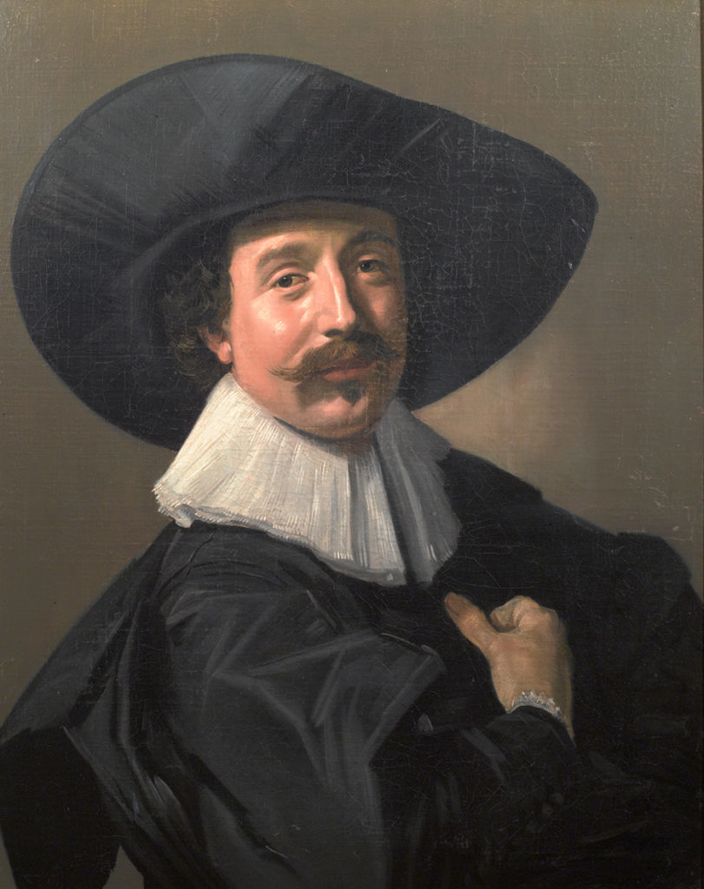
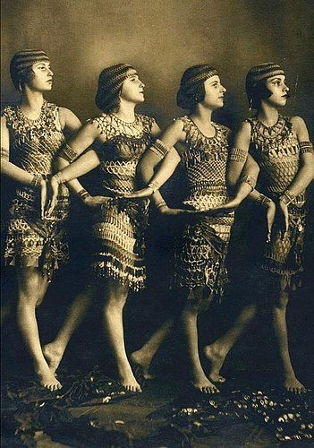
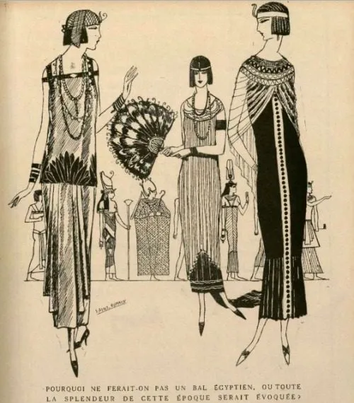
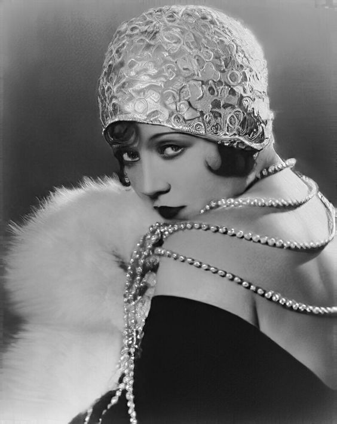
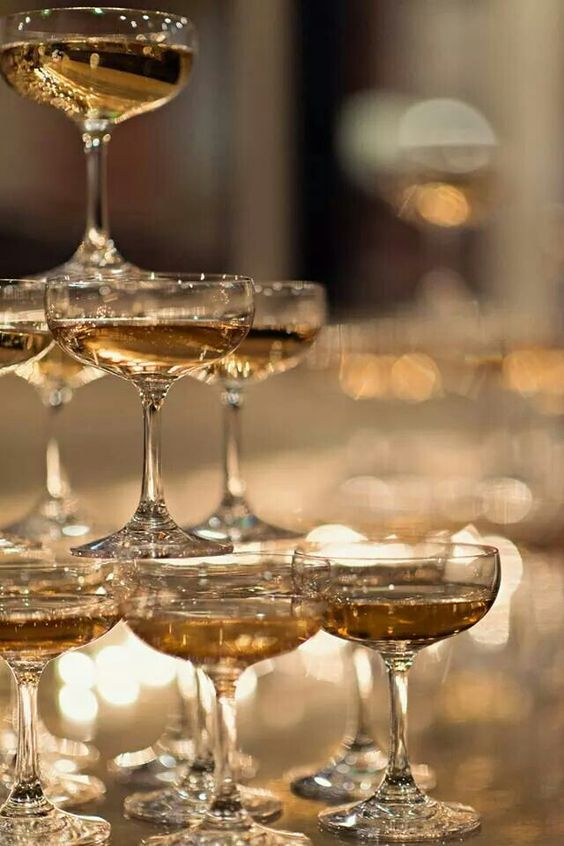
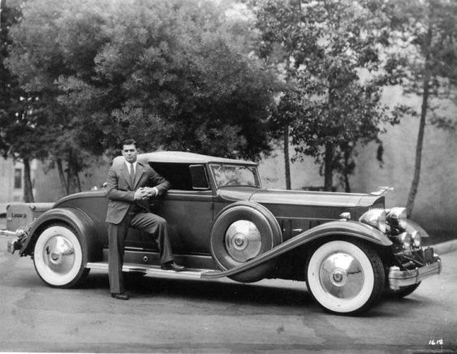
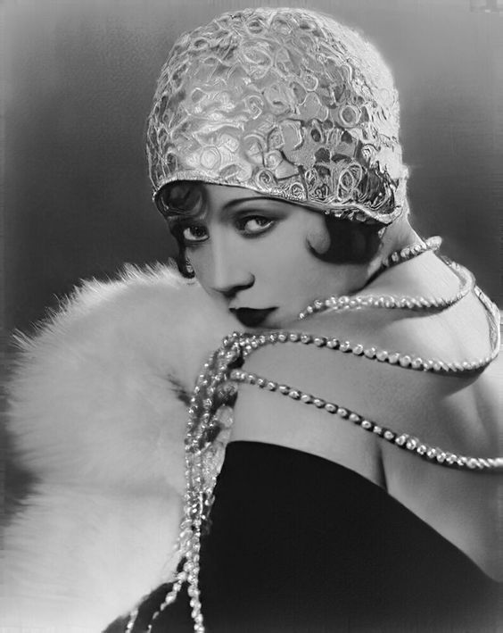
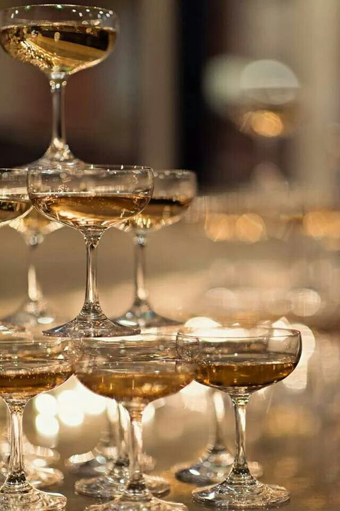
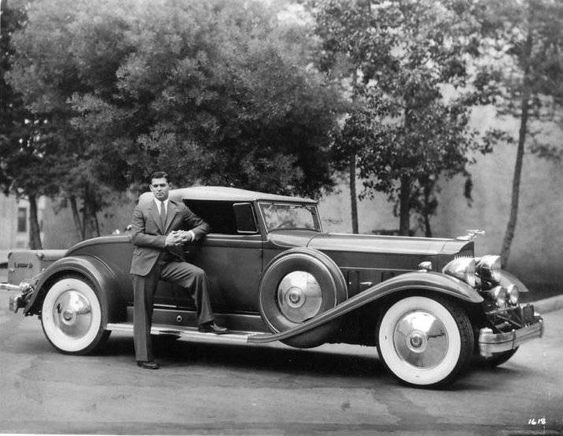

The importance of this time period is actually fascinating besides its shortness, in many ways we can still see its reflection in today's reality. Without a doubt the most remarkable aspect of the 20s is the fashion, and that's what this article is focused on.
Is known that the way we dress is a reflection of our ideas as particular individuals,
and its coincidence with others can describe entire epochs. So to understand fashion, it is far not
enough to just recognize clothing pieces, we need to understand their psychology, the unspoken meaning behind it and what was happening around the world to lead to it.
History of the 20s
The crucial occurrence that led to such a drastic change from the Victorian era to the roaring twenties, was WW1. Which led to two main changes: SOCIAL and ECONOMICAL.
The first one was more revolutionary for women, owing them to take a more significant role not just in the household but the society. From one side due to the lack of militaries, they had to take part in the front, mainly as nurses. And the other, the ones who stayed at home ,
took part in what were considered "men jobs", which meant not just working in fabrics but also carrying mens responsibilities.
What allowed them to have their own salaries and so independence and latter, a right to vote. This independence was clearly reflected in their style,
widely known as "Le Garçon" which in translation from French means: "the boy". Were the iconic short hair reflected freedom.
It allowed more movement and less time to take care of it, so women could focus on something else than their appearance.
And all this evolution occurred in just a 20 year gap starting from the end of the Victorian era in the 1900s.
Just take a look at the pictures bellow to sight the drastic change in the woman character.
Victorian woman
Le Garçon
- It's also important to mention the absence of corsets and any remarking of the feminine figure due to loose clothing. The main reason for it was the lack of materials to make elaborate designs and the introduction of a standard size in the fabrics, for faster production.
In fact, this loose effect was created because of the combination of standardized sizes with malnourished bodies due to hunger.
-Also, some mens habits were adapted, like smoking and playing sports.
And here we can study how this incredible equality raise took its place so fast.
Because actually "women's rights manifestations" had nothing to do with it. It was pure economic change.
The moment women happened to be indispensable in the industries, the majority of their rights came with it.
So as it's logic, being equal to men also brought to looking and acting similarly.
In the case of men, the main style changes were basically a simplification of previous designs, due to the same reasons,
lack of materials and absence of people who could afford buying elaborate pieces. Some curiosities to be remarked here,
can be for example, the reason why facial hair wasn't trending. This was one of the habits inherited from the war. Due to the popularization of the usage of gas
as a weapon, wearing anti gas masks was really common, but the long beards that were popular the previous decade, made it uncomfortable and unsafe.
So shaving became a normal army practice, which stays till today. Another thing to be mentioned is why we stopped wearing hats if they were so popular back then.
And the answer again relies on its practical usage. Before becoming a fashion piece, hats had a solid protecting function.
If we go back in time, between 1400-1700 wearing hats was just a measure to the unsanitary.
They used to have a very wide brim to protect the head from different rubbish that was thrown out of the windows in the narrow streets.
If we go forward until the industrial revolution, in lower classes, it was used as a helmet in the construction sites due to the lack of safety measurements.
And in higher classes, hats were protected from the low ceiling in the cars.
We can clearly follow how the modernization of cars and their accessibility for everyone, coincided with the vanishing of hats in the fashion.
Around the 60s when cars started to have a higher ceiling or on the other hand, when cabriolets were becoming popular, which means, no ceiling at all,
there was no need to keep covering from possible injuries. So that's why we don't see hats as much in the second half of the previous century.
And nowadays, hats are solidly used to compliment the outfits.
Back then
Nowadays


After covering the social side of the 20s,
let's move on to another crucial side, the economical.
Here it is important to remark again that this explanation applies only to the western world, and particularly the USA during that time.
At the end they were the ones who set the standard of association to the 20s.
The reason why the USA stood out after WW1 in comparison to the rest of the world that was fighting crysis, is pretty simple.
They entered the war late (1917), which minimized their losses and being across the ocean
from the center of the conflict helped them to avoid having any battle fronts in their territory.
So they didn't have to focus their entire economy on recovering.
This period of time also coincided with the end of the second industrial revolution (1870-1914).
This technological revolution is characterized by: mass production and standardization.
It opened many new working places and tremendously accelerated urbanization and also increased immigration.
The American economy didn't have competition so they started to dominate.
American citizens had better living conditions now that they were in the cities and had many working opportunities.
That allowed them for the first time in history, to have money not just for survival but also for leisure.
This is a very crucial aspect to mention because that's when activities like
: traveling, playing sports, going shopping, the party culture, going to the cinema... were incorporated in our daily life.
It's the concept itself to start spending your saving on something that makes you feel good.
In the case of traveling, apart from now having the opportunity to go out, the interest for it was encouraged by the exploring spirit
going around due to many historical and geographical discoveries at that time. The most remarkable of them being :
the first flight to the North Pole (1926), the exploration of Antarctica(1929), the underwater explorations and the founding of
Tutankhamun's Tomb in 1922. The last one impacts directly on fashion. New prints were incorporated, fabrics, jewelry, hairstyles.... all
trying to simulate the drawings from the inside of pyramids or the accessories Faraons used to wear.
This obsession over middle eastern culture even has a name: Egyptomania.


And here we could arise a doubt of : why among so many discoverings, only one had so much attention. And the answer relies on how consumerism was raised.
It was all thanks to the mass media; TVs, radio, music, films.. that allowed the information to be spread fast and to be heard and seen everywhere.
So the financial backer of the search for Tutankhamun's tomb, Lord George Carnarvon, took advantage of it.
He made a contract with 'The Times' magazine allowing them access to their work, for it to cover the expenses of the excavations.
Such exclusive content had a massive success
and everyone wanted to get closer to it and explore the mysteries it had. That's when the industries focused all their products on the new trending topic, Egypt.
How Tutankhamun's tomb impacted fashion
Continuing on mass production we can discuss a very interesting occurrence that it provoked that lasts till our days, and its the culture of appearing.
The 1920s was the moment when social classes started to visually disappear. For the first time in history working class people could be seen wearing the same clothes as
the wealthier ones.
And again, it was due to two factors that were already mentioned: the absence of materials to make the same elaborate and complex pieces as there were before and now the
ability of normal people to afford more. So the society was visually a little more balanced.
What it provoked is people wanting to show that they belonged to a more comfortable financial situation that they did by having better clothes,
because they could finally afford them. And here is actually the exact point when society started wanting to show that they lived better than
they did by the solid purpose of impressing others by apparenting. Here we can see a parallel with today's reality where social media is being
accused of causing the same effect,
where people only show the succesful and happy side of their lives. But its erroneous to think that its the fault of digitalisation.
Hundred years ago, it was completely normal to see absolutely stunningly dressed people comming back to their five square meter homes with no water or electricity.
Others opinion mattered no less back then than nowadays, it was even more important at that time,
because reputation and social status played a huge role in someone's life. It always did, but now people could fool the system.
So its interesting to think that the concept of trying to seem perfect, actually took place more than a century ago.
But its still important to remark that social classes disappeared only visually, the wealthiest couldnt drastically stand out no more by just what they wore,
so their privileges were just shown in other ways.

 




